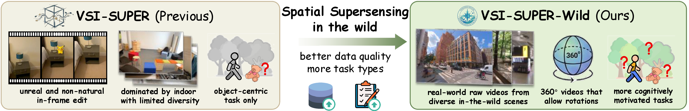
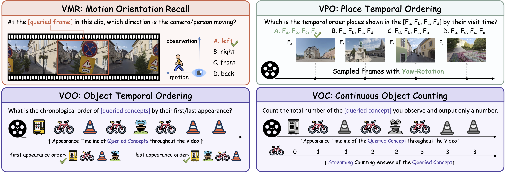
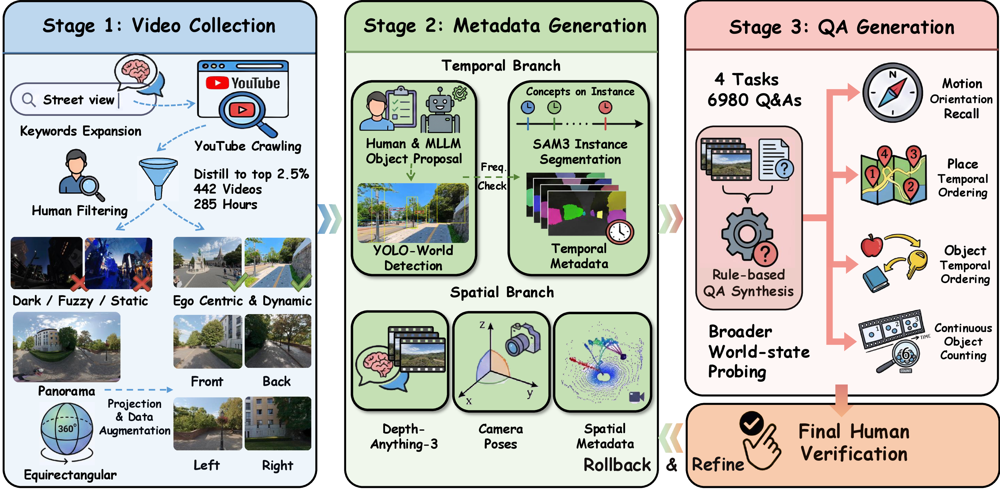
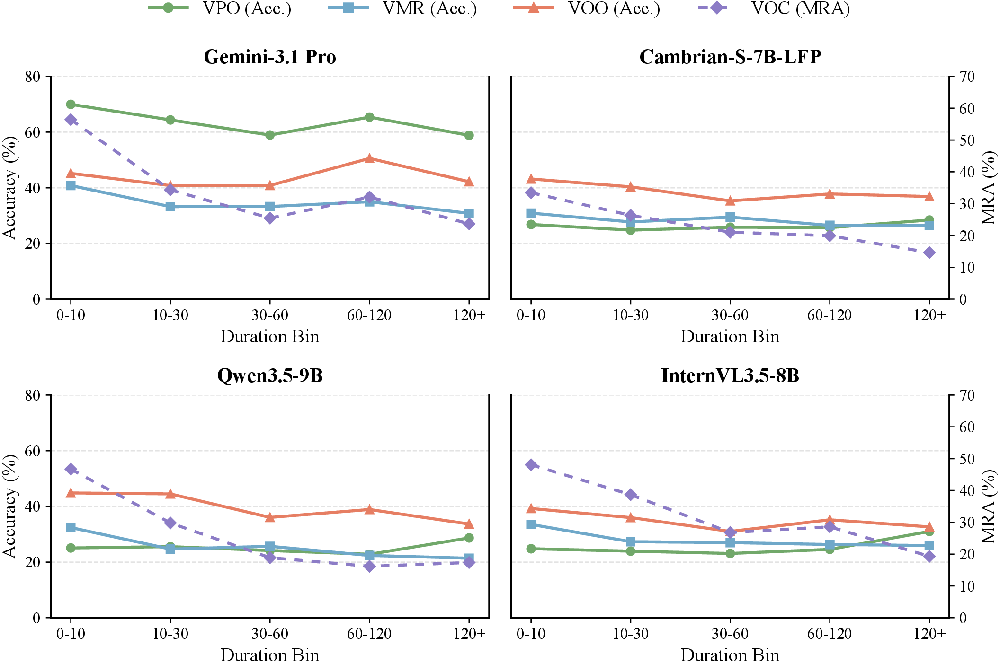
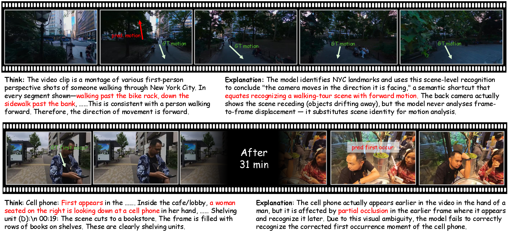
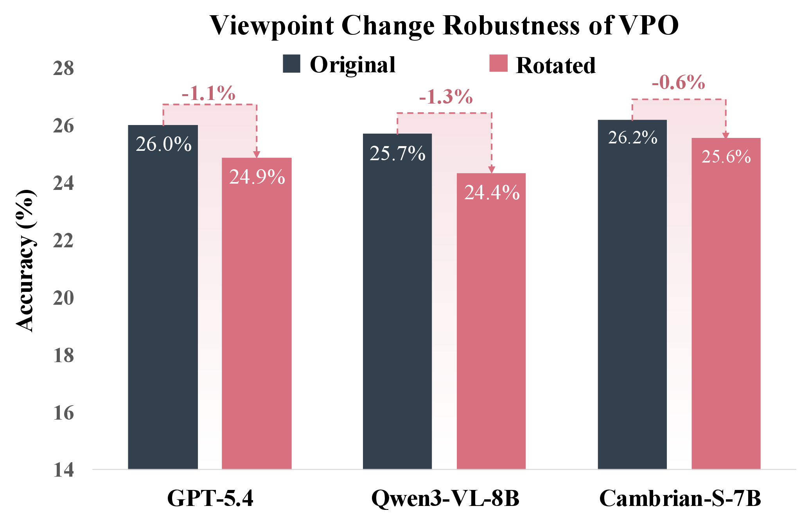
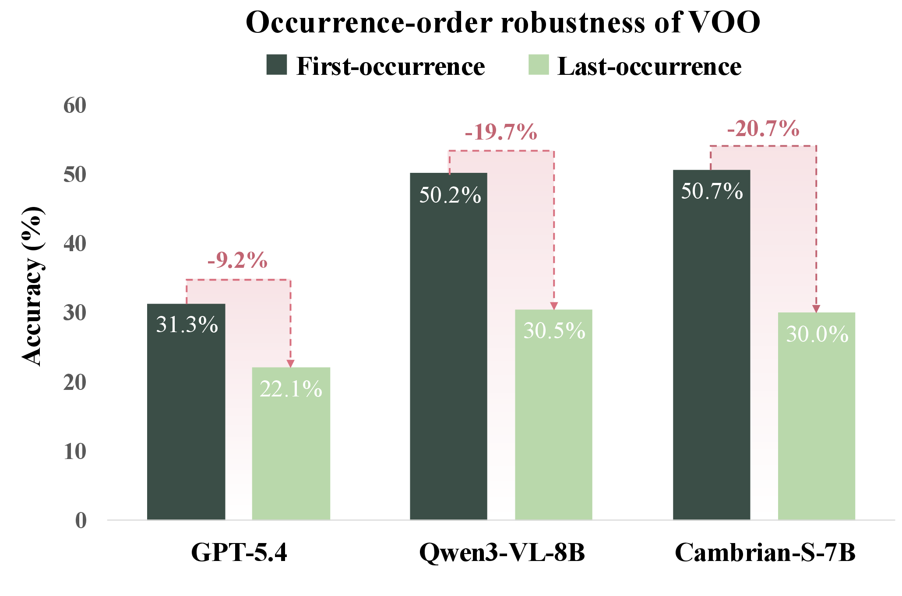

Humans can efficiently parse continuous sensory streams, from hours to years, scaffolding an internal world model that grounds spatial reasoning and prediction. To mimic this capacity, spatial supersensing challenges multimodal models to move beyond linguistic understanding toward true world modeling. However, their benchmark relies on synthetic long videos formed by concatenating random short clips and is mostly limited to household scenes, leaving real-world continuity and diversity underexplored. To address the gap, we introduce VSI-Super-Wild, a large-scale spatial supersensing benchmark built from genuinely long, in-the-wild videos across diverse scenarios. Inspired by cognitive studies on how humans structure experience, we systematically probe the full triad of world state: the agent (observer), objects (scene items), and the environment (places and global layout). In total, VSI-Super-Wild comprises 442 real-world long-form videos across 8 scene categories and 6,980 human-verified question-answer pairs. Evaluating multimodal models on VSI-Super-Wild exposes a fundamental disconnect: despite advances in static image understanding, models consistently fail at tasks that require coherent world-state tracking over time. We characterize how performance degrades with world-state complexity and temporal horizon, and diagnose four failure modes: spatial collapse, semantic shortcuts, insufficient update, and instance confusion.
To bridge the gap between existing benchmarks and real-world spatial supersensing, VSI-Super-Wild is constructed from genuinely long-form, in-the-wild videos and designed to probe the agent-object-environment triad of world state.
Existing spatial supersensing benchmarks mark an important step toward testing implicit world modeling, but they leave real-world continuity and broader world-state coverage underexplored. VSI-SUPER predominantly focuses on household scenes, synthesizes long videos by concatenating short clips with in-frame editing, and emphasizes object-centric probing. VSI-Super-Wild addresses these gaps by moving spatial supersensing toward diverse in-the-wild scenes and broader world-state probing.

VSI-Super-Wild advances spatial supersensing beyond synthetic indoor and object-centric settings toward natural long-video streams and multi-anchor world-state probing.
Inspired by cognitive studies on how humans construct and maintain internal representations, VSI-Super-Wild organizes world-state probing around three complementary anchors: the agent, objects, and the environment. We define four cognitively grounded tasks that test whether MLLMs can construct and maintain world states across long, unconstrained video streams.

Task Suite of VSI-Super-Wild. The benchmark probes the agent-object-environment triad through 4 tasks (VMR, VPO, VOO, and VOC).
Agent-centric. The model infers camera motion orientation relative to viewing direction at a queried moment, requiring latent motion-state recall beyond single-frame matching.
Environment-centric. The model orders place frames under yaw-rotated viewpoints, testing heading-invariant place representations.
Object-centric. The model orders queried objects by first or last occurrence, testing self-updating object-state modeling.
Object-centric with long-horizon updates. The model predicts unique-instance counts from a full video stream, requiring a consistent latent count state over time.
VSI-Super-Wild is built through a scalable, semi-automatic pipeline with human-in-the-loop verification, resulting in long-form in-the-wild videos and high-quality Q&A pairs across diverse scene categories.
The semi-automatic data construction pipeline has three stages shown below. We crawl and filter in-the-wild panoramic YouTube videos, project panoramas into perspective views, generate temporal metadata from object proposals, YOLO-World filtering, and SAM3 instance masks, and generate spatial metadata using Depth-Anything-3 camera poses. Rule-based Q&A synthesis is then verified by human experts, with rollback to refine metadata or Q&A when necessary.

Data construction pipeline of VSI-Super-Wild. The benchmark uses a semi-automatic pipeline including video collection, metadata generation, and Q&A generation, with human-in-the-loop verification.
The intrinsic value of VSI-Super-Wild lies in the empirical complexity, multi-dimensional distribution, and cognitive difficulty of the video data and tasks. The benchmark contains 442 high-quality view-level videos, totaling 284.52 hours of egocentric experience in the wild, and 6,980 human-verified Q&A pairs across four tasks.
Statistics of VSI-Super-Wild: scene-category distribution, video number share per category, object count per scene category, and distribution of single-video duration and Q&A tasks.
Across 13 mainstream MLLMs, current models still struggle to robustly construct, maintain, and query broader spatiotemporal world states under improved real-world diversity.
Current MLLMs remain far from robust spatial supersensing in the wild. Gemini-3.1-Pro achieves the strongest overall score of 44.36, while GPT-5.4 reaches 34.52 and the strongest open-source model, Cambrian-S-7B, reaches 34.22.
| Model | Base LM | VMR | VPO | VOO | VOC | Overall |
|---|---|---|---|---|---|---|
| Proprietary Models | ||||||
| GPT-5.4 | UNK. | 37.76±3.02 | 24.87±2.63 | 37.62±3.13 | 32.94±1.11 | 34.52±1.68 |
| Gemini-3.1-Pro | UNK. | 34.21±2.26 | 63.84±4.46 | 42.54±1.35 | 38.16±5.13 | 44.36±1.39 |
| Gemini-3.1-FlashLite | UNK. | 28.96±2.30 | 23.81±1.75 | 23.17±0.85 | 20.35±1.80 | 23.85±0.72 |
| Open-Source Models | ||||||
| Cambrian-S-0.5B | Qwen2.5-0.5B | 24.36±1.23 | 10.14±0.84 | 20.87±0.70 | 33.30±0.95 | 21.46±0.46 |
| Cambrian-S-3B | Qwen2.5-3B | 25.68±1.25 | 25.42±1.21 | 38.63±0.84 | 34.06±0.96 | 33.18±0.54 |
| Cambrian-S-7B | Qwen2.5-7B | 26.91±1.27 | 25.58±1.21 | 40.36±0.85 | 33.81±0.97 | 34.22±0.54 |
| Cambrian-S-7B-LFP* | Qwen2.5-7B | 28.62±1.20 | 26.06±2.46 | 39.26±3.69 | 26.17±7.98 | 32.86±2.24 |
| Cambrian-S-7B-LFP | Qwen2.5-7B | 26.58±1.27 | 26.11±1.22 | 40.27±0.85 | 28.36±0.94 | 33.35±0.54 |
| InternVL3.5-8B | Qwen3-8B | 27.90±1.29 | 24.65±1.19 | 35.13±0.82 | 36.74±0.96 | 32.18±0.53 |
| Qwen2-VL-7B | Qwen2-7B | 27.41±1.28 | 23.66±1.18 | 30.21±0.79 | 18.72±7.98 | 26.67±1.37 |
| Qwen2.5-VL-7B | Qwen2.5-7B | 31.52±1.33 | 26.11±1.22 | 35.61±0.83 | 22.11±0.87 | 30.98±0.53 |
| Qwen3-VL-8B | Qwen3-8B | 25.60±1.25 | 24.35±1.19 | 40.36±0.85 | 32.73±7.98 | 33.59±1.37 |
| Qwen3.5-9B | Qwen3.5-9B | 25.68±1.25 | 25.19±1.20 | 41.25±0.85 | 30.76±0.95 | 33.87±0.54 |
| Spatial-TTT-nano* | Qwen3-2B | 24.53±1.23 | 24.12±1.19 | 27.82±0.77 | 35.93±0.96 | 27.85±0.51 |
| Model / Duration | 0-10 | 10-30 | 30-60 | 60-120 | 120+ |
|---|---|---|---|---|---|
| Proprietary Models | |||||
| GPT-5.4 | 32.8 | 39.7 | 30.8 | 35.2 | 35.1 |
| Gemini-3.1-Pro | 51.9 | 42.6 | 40.1 | 46.9 | 41.2 |
| Gemini-3.1-FlashLite | 26.9 | 24.2 | 21.8 | 23.3 | 20.2 |
| Open-Source Models | |||||
| Cambrian-S-0.5B | 23.2 | 21.4 | 21.5 | 20.5 | 14.3 |
| Cambrian-S-3B | 37.3 | 34.4 | 30.1 | 29.7 | 28.7 |
| Cambrian-S-7B | 38.5 | 34.9 | 31.5 | 31.3 | 28.9 |
| Cambrian-S-7B-LFP* | 36.8 | 33.3 | 30.4 | 30.7 | 27.9 |
| Cambrian-S-7B-LFP | 39.4 | 32.7 | 30.0 | 32.2 | 29.7 |
| InternVL3.5-8B | 37.5 | 32.8 | 28.2 | 30.5 | 28.2 |
| Qwen2-VL-7B | 29.5 | 26.0 | 26.0 | 21.3 | 25.7 |
| Qwen2.5-VL-7B | 35.9 | 31.1 | 27.3 | 31.5 | 28.3 |
| Qwen3-VL-8B | 36.6 | 34.7 | 31.7 | 32.6 | 25.9 |
| Qwen3.5-9B | 40.1 | 35.5 | 29.4 | 29.3 | 26.0 |
| Spatial-TTT-nano* | 30.5 | 27.6 | 26.6 | 26.4 | 25.3 |
| Average | 35.0 | 31.3 | 28.4 | 28.7 | 26.3 |

Performance across temporal horizons on VSI-Super-Wild. The table reports overall scores grouped by video duration, and the line chart visualizes per-task scores of representative models.
Qualitative and quantitative analyses reveal four recurring failure modes that hinder coherent representations of the agent, objects, and environment: spatial collapse, semantic shortcuts, insufficient update, and instance confusion.

Case studies for semantic shortcut and instance confusion in in-the-wild videos.

Spatial collapse diagnostic.

Insufficient update diagnostic.
VSI-Super-Wild evaluates whether MLLMs can conduct human-like implicit world modeling under real-world in-the-wild streams. Compared with existing supersensing benchmarks, it advances evaluation along two axes: real-world diversity and broader world-state probing.
Across 13 mainstream MLLMs, current models still fall substantially short of robust spatial supersensing in the wild. Models are relatively more reliable on object-centric state queries, yet struggle on agent- and environment-centric components that require stronger 3D spatial cognition. Performance also degrades as the temporal horizon increases, and diagnostic analyses expose spatial collapse, semantic shortcuts, insufficient update, and instance confusion.
@article{VSI_Super_Wild,
title={Towards Spatial Supersensing in the Wild},
author={Gu, Tianjun and Xin, Tianyu and Zhang, Kuan and Yang, Bowen and Chua, Kok-Chung and Li, Peize and Zhang, Xinran and Chen, Yupeng and Zhao, Qiyue and Xie, Qinlei and Liu, Jianhang and Lu, Yucheng and Han, Yinan and Pavone, Marco and Li, Yiming},
journal={arXiv preprint},
year={2026}
}